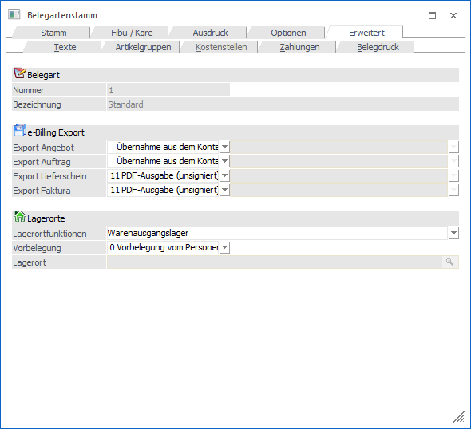
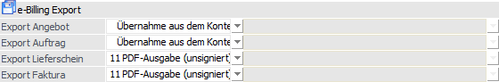
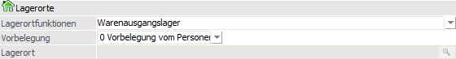

In dem Register "Erweitert" können Einstellungen zu den Themen "e-Billing" und "Lagerorte" getroffen werden.

Im oberen Teil des Fensters wird die Belegart angezeigt, welche gerade bearbeitet wird (Felder "Nummer" und "Bezeichnung").
e-Billing Export

Ø Export Angebot / Export Auftrag / Export Lieferschein / Export Faktura
In diesem Bereich kann angegeben werden, wie die Ausgabe von e-Billing-Belege erfolgen soll. Dazu stehen pro Belegstufe die jeweiligen Felder zur Verfügung.
Aus den Auswahllisten können zum einen die Exportvarianten gewählt werden und abhängig vom Exporttyp zusätzlich die gewünschten XML-Exportvorlagen.
Bei Verwendung der Belegart übersteuert diese den Eintrag des Personenkontos; ausgenommen der Eintrag "Übernahme aus dem Kontenstamm" wird verwendet. Beim Erfassen eines Beleges würden dann jene in den Belegkopf übernommen werden.
Zur Auswahl stehen pro Belegstufe folgende Möglichkeiten:
Export Angebot
ü - - Übernahme aus dem Kontenstamm
ü 0 - keine XML-Ausgabe
ü 4 - PDF-Ausgabe (signiert)
ü 8 - XML-Exportvorlage (Angebote) => Hier kann zusätzlich die zu verwendende Exportvorlage angegeben werden
ü 11 - PDF-Ausgabe (unsigniert)
Export Auftrag
ü - - Übernahme aus dem Kontenstamm
ü 0 - keine XML-Ausgabe
ü 4 - PDF-Ausgabe (signiert)
ü 9 - XML-Exportvorlage (Aufträge) => Hier kann zusätzlich die zu verwendende Exportvorlage angegeben werden
ü 11 - PDF-Ausgabe (unsigniert)
Export Lieferschein
ü - - Übernahme aus dem Kontenstamm
ü 0 - keine XML-Ausgabe
ü 4 - PDF-Ausgabe (signiert)
ü 10 - XML-Exportvorlage (Lieferschein) => Hier kann zusätzlich die zu verwendende Exportvorlage angegeben werden
ü 11 - PDF-Ausgabe (unsigniert)
Export Faktura
ü - - Übernahme aus dem Kontenstamm
ü 0 - keine XML-Ausgabe
ü 1 - EBInvoice (signiert)
ü 2 - EBInvoice (unsigniert)
ü 3 - XML-Exportvorlage => Hier kann zusätzlich die zu verwendende Exportvorlage angegeben werden
ü 4 - PDF-Ausgabe (signiert)
ü 5 - EBInvoice (signiert) + PDF-Ausgabe (unsigniert)
ü 6 - XML-Exportvorlage (signiert) => Hier kann zusätzlich die zu verwendende Exportvorlage angegeben werden, wobei zu beachten ist, dass nur jene XML-Exportvorlagen auswählbar sind, die das Exportkennzeichen "10 - Signatur hier einfügen" enthalten.
ü 11 - PDF-Ausgabe (unsigniert)
ü 12 - EBInvoice (E-Rechnung an den Bund)
ü 13 - EBInvoice (E-Rechnung an BBG)
ü 14 - EBInvoice (unsigniert) + PDF-Ausgabe (unsigniert)
ü 15 - XRechnung
ü 16 - ZUGFeRD/Factur-X (XML)
ü 17 - ZUGFeRD/Factur-X (PDF inkl. XML)
Lagerorte

Ø Lagerortfunktion
An dieser Stelle kann mit Hilfe einer Auswahlliste definiert werden, welche Lagerortfunktionen bei der Erfassung der Lagerorte berücksichtigt werden sollen. Folgende Funktionen können ausgewählt werden (Mehrfachauswahl möglich):
ü Warenausgangslager
ü Wareneingangslager
ü Kommissionslager
ü Konsignationslager
ü Produktionslager
ü Reparaturlager
ü Sperrlager
ü Fremdfertigungslager
Ø Vorbelegung
An dieser Stelle kann definiert werden, ob in der Belegerfassung eine automatische Lagerortaufteilung erfolgen soll.
ü 0 - Vorbelegung vom
Personenkonto
Beim Erfassen eines Beleges wird der hinterlegte Lagerort aus
dem Personenkonto (Register "FAKT") in das Register "Zusatz" des Belegs
übernommen.
Wird nachfolgend ein Artikel mit Lagerortstruktur erfasst, so
wird automatisch der vorgegebene Lagerort zugewiesen und das Fenster "Lagerorte
erfassen" nicht geöffnet.
ü 1 - keine Vorbelegung
Beim
Erfassen eines Beleges wird das Feld "Lagerort" (Register "Zusatz") nicht
vorbelegt (obwohl ggfs. im Personenkonto hinterlegt). Es erfolgt daher keine
automatische Lagerortaufteilung und das Fenster "Lagerorte erfassen" wird immer
geöffnet (ausgenommen in den Aufteilungsoptionen ist ein Aufteilen nicht
erlaubt).
ü 2 - Eingabe
Durch Auswahl der
Vorbelegung "2 - Eingabe" kann der gewünschte Lagerort in dem nachfolgenden Feld
"Lagerort" hinterlegt werden. Beim Erfassen eines Belegs wird dann dieser Ort in
den Beleg übergeben (Register "Zusatz").
Wird nachfolgend ein Artikel mit
Lagerortstruktur erfasst, so wird automatisch der vorgegebene Lagerort
zugewiesen und das Fenster "Lagerorte erfassen" nicht geöffnet.
Hinweis
Eine detaillierte Beschreibung der Voraussetzungen bzw. Arbeitsabläufe kann dem Kapitel "Belegerfassung - Register "Mitte" - Automatische Lagerortaufteilung" entnommen werden.
Ø Lagerort
Wird als Lagerortvorbelegung die Option "2 - Eingabe" gewählt, so kann an dieser Stelle eine Vorbelegung des Lagerorts erfolgen. Der Ort muss dabei nicht der letzten Hierarchie-Ebene entsprechen.